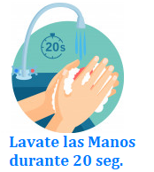
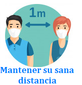
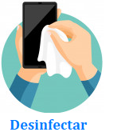
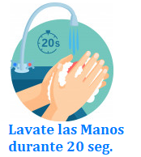
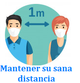
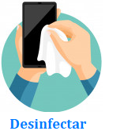

Los sintomas aparecen entre dos y catorce días, con un promedio de cinco días, después de la exposición al virus. Existe evidencia limitada que sugiere que el virus podría transmitirse uno o dos días antes de que se tengan síntomas.
Los síntomas de un resfriado común suelen aparecer de uno a tres días después de la exposición a un virus que causa resfriado. Los signos y sintomas, pueden variar de una persona a otra.
Una alergia es una reacción de su sistema inmunitario hacia algo que no molesta a la mayoría de las demás personas. Quienes tienen alergias suelen ser sensibles a más de una cosa.
La influenza es una enfermedad leve o grave y en ocasiones puede llevar a la muerte. Los síntomas aparecen de manera repentina. *Es importante aclarar que no todas las personas con influenza tendrán fiebre*
 






El gobernador de Jalisco, Enrique Alfaro, fue el primero en anunciar que se adelantarían a las fechas emitidas por la SEP. El anuncio de estas entidades se dio después de que el gobierno feeral, a través de la SEP, informará que las actividades en las escuelas quedarán suspendidas del 20 de marzo (último día de claes), debido a la contigencia por Covid-19. La Secretaría de Salud insistió en que las personas guarden su sana distancia, realicen el lavado de manos o aplicación constante de gel y el uso de cubrebocas. Para disminuir la cadena de contagio, la autoridad sanitaria mantendrá una vigilancia epidemilógica con pruebas aleatorias en corredores comerciales, plazas y paradas de autobuses.
El cierre de las escuelas ha tenido un alto impacto en la educación. En el caso mexicano más de 35 millones de estudiantes y dos millones de docentes se vieron súbitamente privados del espacio escolar que es el luagr educativo por excelencia. Las clases virtuales y la realización de videos tiene un peso sustancialmenta más marcado en las escuelas privadas, esto se debe a la mayor dispoinibilidad de TIC en los hogares de los alumnos de las escuelas privadas.Los maestros se han tenido que tomar la tarea de utilizar plataformas nuevas, realizar las clases de alguna manera para que todos sus alumnos comprendan lo que se menciona, cabe mencionar que algunos alumnos no pueden tomar las clases on-line a falta de recursos económicos
Los estudiantes de muestran de acuerdo con mantener las medidas de confinamiento que ha decretado el Gobierno del Estado. La enseñanza telemática sólo es viable cuando se dispone del equipo necesario, algo que hoy no está garantizado, ya que algunos estudiantes aseguran que hay muchas familias que no disponen de ordenadores para que sus hijos puedan seguir el ritmo académico y es por este motivo que que la enseñanza telemática se hace más profunda en la desigualdad de clase en el sistema educativo y empeora las condiciones de aquellos que menos tienen. La docencia presencial no es sustituible en ningún caso, al igual que no lo es tampoco la escuela, no existe ninguna fórmula en que la docencia virtual pueda asegurar el grado de calida de la docencia presencial. Sin embargo hay muchos estudiantes que no estan de acuerdo a la Nueva Modalidad ya que no aprenden de la misma manera que estando presencial, esto ha ocasionado mucho estrés y frustación.
Los Padres de Familia mencionan sobre la dificultad para poder llevar a cabo la educación en casa y más si esa familia es de bajo recursos y se han visto varias situaciones en donde una familia de 3 niños que esten estudiando al mismo tiempo, dispongan de un ordenador, lo cual esto causa muchos conflictos familiares ocasionando demasiado estrés, tensión y mucho más dicusiones familiares. Un 43 por ciento de las familias encuestadas se ha visto bastante o muy afectado económicamente por la crisis de la COVID-19. Un 30 por ciento indica que han aumentado sus gastos familiares, cifra que se eleva hasta el 40 por ciento en el caso de los monoparentales. Una de cada ocho familias manifiesta encontrarse en una situación económica preocupante.